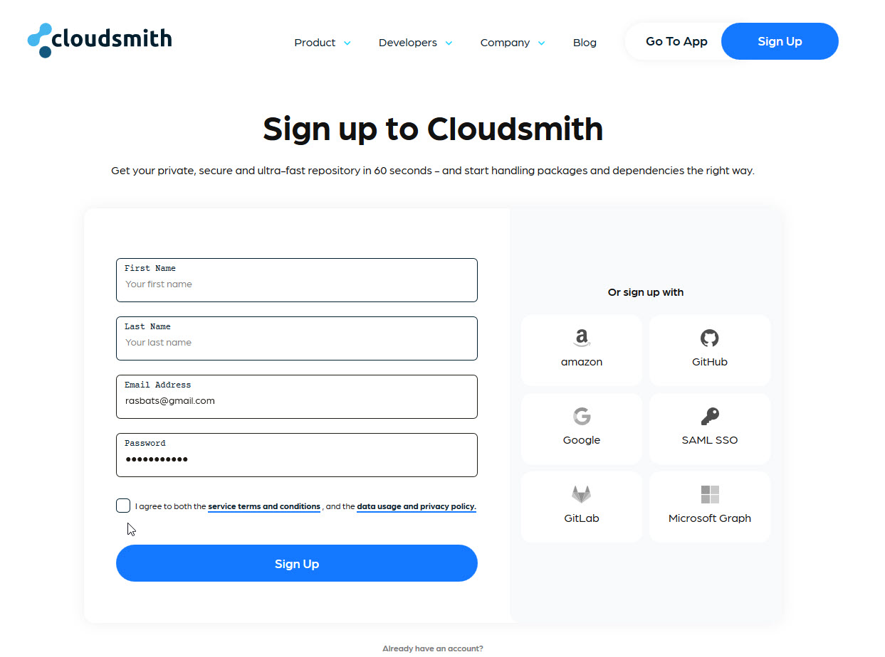
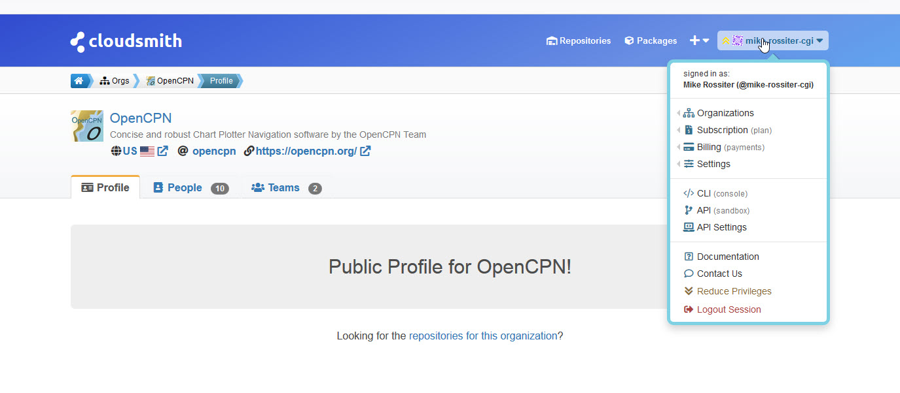
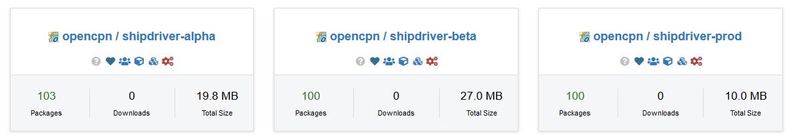
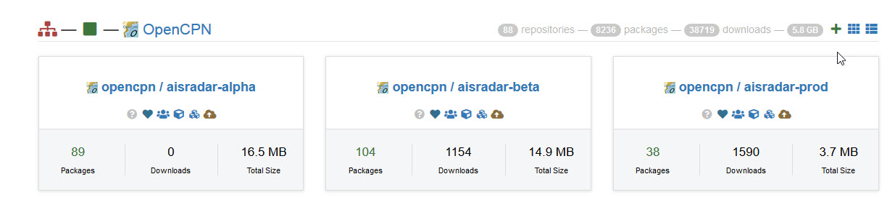
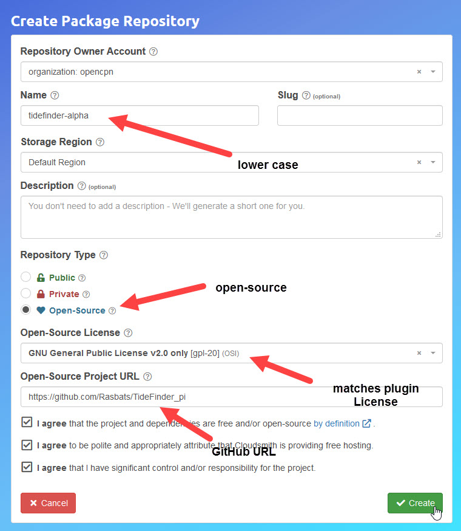
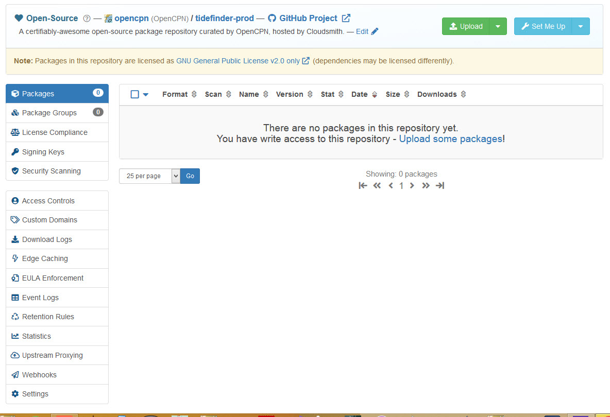
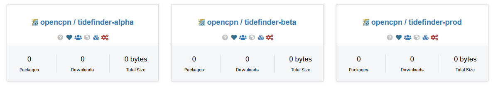
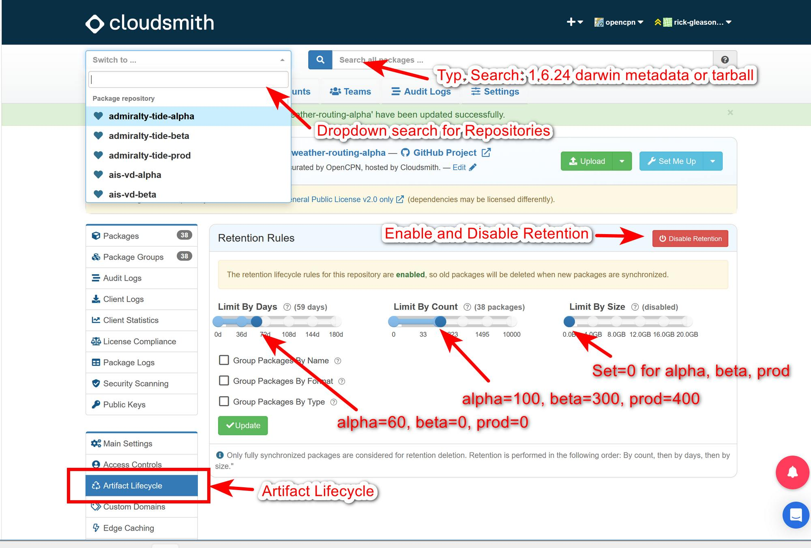
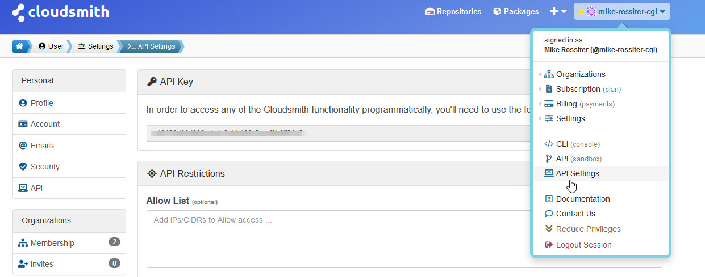

Cloudsmith
Cloudsmith is the deployment repository which hosts the tarballs that form the heart of the managed plugin system.

Sign Up
This is easiest using your GitHub account. Signing up is free and you start a ``Free Trial''. You will get an email from Cloudsmith after a few days:
Just a friendly reminder that your trial subscription on Cloudsmith to the
Package (FREE) plan is due to run out 2 days, 23 hours from now.
The paid plan is not necessary. The extra features are not required for creating repositories for your plugin.
Joining the Cloudsmith OpenCPN organisation
This step is optional. A membership is not required to create repositories, but makes it possible to create them in the same area as some other plugins. However, creating the same repositories without being part of the organization works just fine.
To Join Send an email to Rick Gleason, Jon Gough or Dave Register requesting an invite. This will then be generated by Cloudsmith. FIXME: email addresses needed…
Good news! You’ve been invited by Rick Gleason (@rick-gleason) to be a member of the OpenCPN (@opencpn) organization at Cloudsmith.
What can members do? They can see other members and visible teams, and inherit privileges from the org and team membership..
You’ll need to login to your account to accept or reject the invite: https://cloudsmith.io/user/login/
After you login you will automatically find the invite within the organization invites section of your user settings: https://cloudsmith.io/user/settings/orgs/invites/
Accept/reject the invitation: https://cloudsmith.io/orgs/opencpn/people/invites/fCRGknS1o0IX/
If you accept the invitation then your user account will join the OpenCPN (@opencpn) organization at Cloudsmith. Please note that because this invitation was sent to Mike Rossiter (@mike-rossiter) only that specific account will be able to accept the invitation.
This gives member rights which allows setting up repositories on Cloudsmith for the tarballs and metadata files built by the virtual machines.
Once the invite is accepted you will see the OpenCPN organisation details.

Many repositories have packages already in place.
Create the repositories.
As mentioned, this works in the same way if using the cloudsmith organization or not. Eventually, three repositories could be configured. The names are formally arbitrary, but usually named like
-
Tidefinder-Alpha ur tidefinder-unstable: This is basically a scratch build repository.
-
Tidefinder-Beta: The repository for beta builds.
-
Tidefinder-Prod or tidefinder-stable: The repository for stable builds i. e., builds published to end users.
The beta repository is not required, just using two repositories like stable/unstable also works fine.
 To create the repositories for TideFinder click the plus sign at the right of the screen.

Enter the details for the repository starting with the alpha (unstable) repo.

Repeat for the beta and prod (stable) repositories.

Three repos have been created.

Retention life of the repositories
For repos within the Cloudsmith opencpn organisation it is possible to use the setting Artifact Lifecycle.

Repeat for the beta and prod (production) repositories.
Repos outside the opencpn organisation cannot use the lifecycle without a subscription (non-free). Any number of packages can be added to the repos. Tarballs and metadata files are retained indefinitely. Be aware that in this case there is a limit of 50gb storage. Also a bandwidth of 200gb a month applies for uploads. This is reset to zero at the start of a new month.
While using Cloudsmith make a note of the API Key. This can be copy/pasted to a file on your PC for use later. 